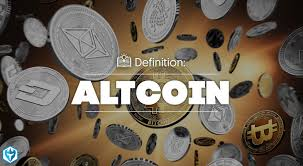

what is altcoins?

Altcoins are generally defined as all cryptocurrencies other than Bitcoin (BTC). However, some people consider altcoins to be all crytocurrencies other than Bitcoin and Ethereum (ETH) because most cryptocurrencies are forked from one of the two. Some altcoins use different consensus mechanisms to validate transactions and open new blocks, or attempt to distinguish themselves from Bitcoin and Ethereum by providing new or additional capabilities or purposes.
Most altcoins are designed and released by developers who have a different vision or use for their tokens or cryptocurrency. Learn more about altcoins and what makes them different from Bitcoin.
key takeaways
- The term altcoin refers to all cryptocurrencies other than Bitcoin (and for some people, Ethereum).
- There are tens of thousands of altcoins on the market.
- Altcoins come in several types based on what they were designed for.
- The future value of altcoins is impossible to predict, but if the blockchain they were designed for continues to be used and developed, the altcoins will continue to exist.
- Stablecoins pursue price stability by maintaining reserve assets as collateral or through algorithmic formulas that are supposed to control supply.
- Stablecoins continue to come under scrutiny by regulators, given the rapid growth of the $128 billion market and its potential to affect the broader financial system.1
CoinMarketCap. "Top Stablecoin Tokens by Market Capitalization."